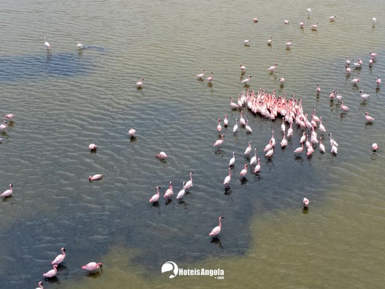

A beleza dos Flamingos nos mangues da cidade do Lobito
Os flamingos são aves majestosas e exóticas que possuem uma forte conexão com a cidade do
Lobito, em Benguela. Localizado nas margens do Oceano Atlântico, o Lobito abriga mangais que
são o ponto de paragem de grandes grupos de flamingos.
Essas aves elegantes trazem um encanto especial para a paisagem do Lobito, com suas plumagens rosa vibrante e corpos esguios.
É um espetáculo maravilhoso observar os flamingos, caminhando graciosamente nas águas rasas dos mangais ou voando em formação pelo céu.
Os manguezais do Lobito fornecem o ambiente perfeito para os flamingos se alimentarem.
Essas aves se alimentam principalmente de pequenos organismos presentes na lama e na água salgada dos manguezais,
como camarões e larvas de insetos. Os manguezais oferecem uma rica fonte de alimento para os flamingos e é lá que eles podem ser facilmente avistados formando grandes grupos.
Além de ser uma atração para os observadores de aves, as presenças dos flamingos nos manguezais do Lobito também
desempenham um papel importante no ecossistema local. Eles ajudam na manutenção do equilíbrio da cadeia alimentar,
controlando a população de pequenos animais e contribuindo para a preservação da biodiversidade.
 Lobito, Benguela, AO
Lobito, Benguela, AO